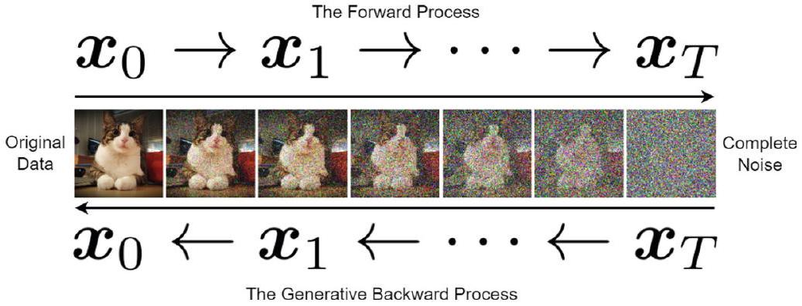
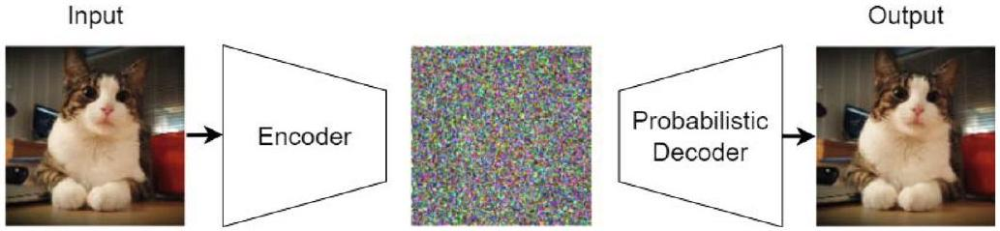
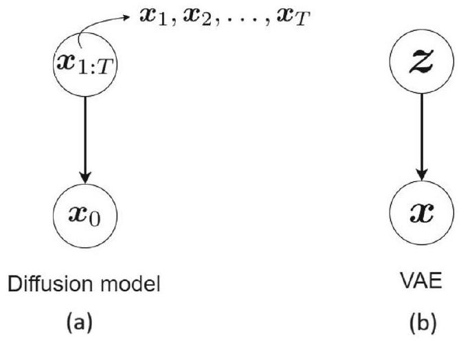
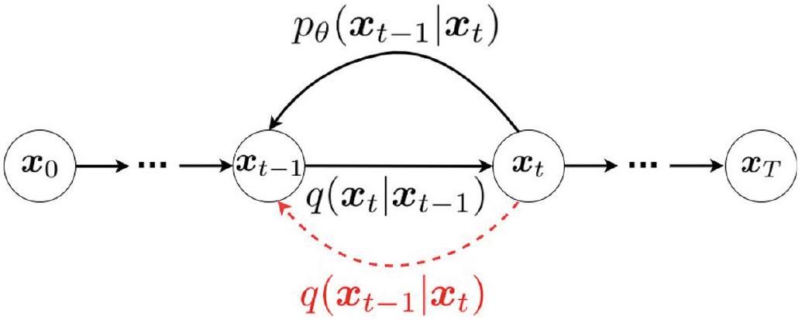

章節定位：diffusion 動機、前向/逆向直覺、autoencoder/VAE 類比
▼直覺：把一張照片慢慢加雜訊，再慢慢把它變回來
Diffusion model 是 2020 年代最重要的生成模型家族之一。它的核心想法非常直觀：
- Forward process（前向過程）：從一張真實資料 $x_0$ 開始，每次加一點點高斯雜訊，經過 $T$ 步後變成幾乎純雜訊 $x_T$。
- Backward process（逆向過程）：從純雜訊 $x_T$ 出發，學習一步一步去掉雜訊，最後還原出 $x_0$。
這個想法來自非平衡熱力學：就像把一滴墨水慢慢攪散，再學會把攪散的墨水還原成原來的形狀。

Autoencoder 類比
可以把 diffusion model 想像成一個特別的 autoencoder：
- Encoder：前向加噪過程，是固定的，不需要學習。
- Decoder：逆向去噪網路 $p_\theta(x_{t-1} \mid x_t)$，是需要學習的部分。

這和 VAE 最大的不同是：VAE 的 encoder 與 decoder 都要學，diffusion 的 encoder 是固定的。

English recap: forward noising, backward denoising
Diffusion models use a fixed Markov chain to add noise and learn a neural network to reverse it. They can be viewed as an autoencoder with a fixed encoder and a learned decoder.
本章路線圖
- §2：DDPM 的 forward/backward process、ELBO、重參數化、loss。
- §3：改進 DDPM：學習 covariance、gradient noise、cosine schedule、PriorGrad、加速方法。
- §4：Conditional diffusion（ILVR、classifier guidance、classifier-free guidance）。
- §5：連續化 SDE 與 score matching。
- §6：總結與習題。
🤖 AI 生圖可用：重繪此示意圖的提示詞（結構化）
WHAT（骨架）: 上半部是 Diffusion pipeline：左邊藍色 data x0 → 灰色 fixed encoder「加噪」→ 黃色 noisy xT → 紫色 learned decoder「去噪」→ 藍色 data。下半部是 VAE pipeline：藍色 data → 藍色 learned encoder → 灰色 latent z → 藍色 learned decoder → 藍色重建。兩條 pipeline 左右對齊。 WHY（因果或反直覺）: 雖然 diffusion 常被類比成 autoencoder，但關鍵差異在 encoder 是否固定。VAE 要同時學 encoder 與 decoder，diffusion 的 encoder 是預設的加噪過程，只有 decoder 要學。反直覺：固定 encoder 反而讓訓練更穩定，因為 forward 沒有學習誤差。 MUST show（必備要素）: ① Diffusion 的 fixed encoder 標為灰色/虛線感；② Diffusion 的 learned decoder 標為紫色；③ VAE 的 encoder 與 decoder 都是藍色（都學習）；④ 兩條 pipeline 左右對齊；⑤ 中間標示 Diffusion vs VAE。 AVOID（禁止）: 不要只畫兩個方框連箭頭而沒有「固定 vs 學習」的顏色區分；不要把 diffusion 畫成兩端都是同一顏色；不要出現 LaTeX 反斜線。 STYLE: flat vector, viewBox 720×360, white background, blue/gray/purple/yellow blocks, Chinese + English labels, clean arrows, no shadows.
Diffusion model 的核心精神是什麼？
在 diffusion model 的 autoencoder 類比中，哪一個部分是固定的？
Diffusion model 與 VAE 的主要差異是什麼？
到 2025 年，以下哪個應用不是 diffusion model 驅動的代表系統？
Forward Process：馬可夫鏈、高斯條件、$\beta_t$ 排程
▼直覺：一步一步把真實資料攪成雜訊
Forward process 把資料 $x_0$ 透過 $T$ 步轉換成純雜訊 $x_T$：
$$ x_0 \rightarrow x_1 \rightarrow \cdots \rightarrow x_T. \tag{1} $$
每一步只依賴前一步，所以是 Markov chain：
$$ q(x_t \mid x_{t-1}, x_{t-2}, \dots, x_0) = q(x_t \mid x_{t-1}). \tag{4} $$
高斯轉移
每一步的條件分布是高斯：
$$ q(x_t \mid x_{t-1}) = \mathcal{N}\left(x_t; \sqrt{1-\beta_t}\, x_{t-1}, \beta_t I\right). \tag{2} $$
意思是：新的 $x_t$ 是前一狀態 $x_{t-1}$ 縮小一點，再加上變異數為 $\beta_t$ 的雜訊。
雜訊排程
$\beta_t$ 是預先決定的雜訊強度，隨時間遞增：
$$ \beta_1 \lt \beta_2 \lt \cdots \lt \beta_T. \tag{3} $$
越到後期，資料越被雜訊淹沒。
聯合分布
因為是 Markov chain，聯合分布可寫成連乘：
$$ q(x_{1:T} \mid x_0) = \prod_{t=1}^{T} q(x_t \mid x_{t-1}). \tag{5} $$
English recap: forward noising Markov chain
The forward process is a fixed Markov chain of Gaussian transitions. The noise level $\beta_t$ increases over time, corrupting data into standard Gaussian noise at step $T$.
🤖 AI 生圖可用：重繪此示意圖的提示詞（結構化）
WHAT（骨架）: 中央一條水平馬可夫鏈：x0（深藍方塊）→ x1 → x2 → ... → xT（灰色方塊，標 N(0,I)）。箭頭上方標 beta1、beta2、beta3、betaT，顏色從淺藍漸變到灰。下方一條漸層 bar 顯示 beta_t 從小到大遞增。中間文字標示 Markov 性質。 WHY（因果或反直覺）: 前向過程是固定的，每一步只依賴前一步。beta_t 從小到大，讓資料慢慢變成純雜訊。反直覺：我們故意破壞資料，但這種「可逆的破壞」正是生成模型的基礎。 MUST show（必備要素）: ① x0 到 xT 的連續方塊；② 箭頭標 beta_t 且顏色漸變；③ 終點 xT 標準高斯；④ 下方 beta schedule 漸層 bar；⑤ Markov 文字說明。 AVOID（禁止）: 不要把鏈畫成雙向；不要省略 beta_t 遞增；不要把 xT 畫成和 x0 一樣清晰。 STYLE: flat vector, viewBox 720×360, white background, blue-to-gray gradient chain, Chinese + English labels, clean arrows, no shadows.
Forward process 的條件分布 $q(x_t \mid x_{t-1})$ 是什麼分布？
$\beta_t$ 隨時間怎麼變化？
Forward process 為什麼是 Markov chain？
Joint distribution $q(x_{1:T} \mid x_0)$ 可以怎麼寫？
Backward Process：$p_\theta$ 高斯與 isotropic covariance
▼直覺：從雜訊中一步一步還原資料
Backward process 與 forward 方向相反：
$$ x_T \rightarrow x_{T-1} \rightarrow \cdots \rightarrow x_0. \tag{6} $$
我們不知道真正的逆向轉移 $q(x_{t-1} \mid x_t)$，所以用神經網路 $p_\theta$ 去逼近：
$$ p_\theta(x_{t-1} \mid x_t) = \mathcal{N}\left(x_{t-1}; \mu_\theta(x_t, t), \Sigma_\theta(x_t, t)\right). \tag{7} $$
簡化：isotropic covariance
為了簡單，covariance 通常設為對角且 isotropic：
$$ \Sigma_\theta(x_t, t) = \sigma_t^2 I. \tag{8} $$
也就是說，每個維度共享同一個變異數 $\sigma_t^2$。
起點與聯合分布
生成過程從標準高斯雜訊開始：
$$ p(x_T) = \mathcal{N}(0, I). \tag{11} $$
整個生成過程的聯合分布是：
$$ p_\theta(x_{0:T}) = p(x_T) \prod_{t=1}^{T} p_\theta(x_{t-1} \mid x_t). \tag{10} $$
同樣具有 Markov 性質：
$$ q(x_{t-1} \mid x_t, x_{t+1}, \dots, x_T) = q(x_{t-1} \mid x_t). \tag{9} $$
English recap: learned Gaussian reverse transitions
The backward process is a learned Markov chain of Gaussian denoising steps. It starts from $p(x_T)=\mathcal{N}(0,I)$ and iteratively predicts $x_{t-1}$ from $x_t$.
🤖 AI 生圖可用：重繪此示意圖的提示詞（結構化）
WHAT（骨架）: 從左到右的逆向鏈：灰色 xT ~ N(0,I) → 紫色箭頭 → 淺藍 x{T-1} → ... → 深藍 x0。每個紫色箭頭下方標 mu_theta(x_t,t) 與 sigma_t^2 I。最下方一個淺灰框標示 neural network p_theta(x_{t-1}|x_t)。
WHY（因果或反直覺）: 我們不知道真正的逆向轉移，所以用神經網路參數化高斯分布去逼近。反直覺：雖然 xT 看起來是純雜訊，但只要每一步去噪一點點，就能還原出真實資料。
MUST show（必備要素）: ① 逆向箭頭從左到右；② 方塊顏色從灰恢復到深藍；③ 每步標高斯參數 mu_theta 與 sigma_t^2 I；④ 底部標 neural network；⑤ 起點是標準高斯。
AVOID（禁止）: 不要把逆向畫成確定性映射；不要忽略 covariance 標註；不要用 LaTeX 反斜線。
STYLE: flat vector, viewBox 720×360, white background, purple arrows, blue-to-gray blocks, Chinese + English labels, clean arrows, no shadows.Backward process 從什麼分布開始取樣 $x_T$？
$p_\theta(x_{t-1} \mid x_t)$ 通常假設為什麼分布？
Isotropic covariance 表示什麼？
生成過程的聯合分布 $p_\theta(x_{0:T})$ 如何表示？
ELBO 推導：KL 拆解與 telescoping sum
▼直覺：既然真正 likelihood 算不出來，就最大化它的下界
我們想要最大化資料的 likelihood $p_\theta(x_0)$，但它涉及對所有 latent states 積分：
$$ p_\theta(x_0) = \int p_\theta(x_0, x_{1:T}) \, dx_{1:T}. \tag{13} $$
這個積分無法直接算，所以我們轉而最大化 Evidence Lower Bound (ELBO)，類似 VAE 的做法。
VAE 的 ELBO 回顧
$$ \mathbb{E}_{q(z \mid x)}[\log p_\theta(x \mid z)] - \mathrm{KL}(q(z \mid x) \| p_\theta(z)) \le p_\theta(x). \tag{14} $$
Diffusion 的對應版本是：
$$ \mathcal{L} := \mathbb{E}_{q(x_{1:T} \mid x_0)}[\log p_\theta(x_0 \mid x_{1:T})] - \mathrm{KL}(q(x_{1:T} \mid x_0) \| p_\theta(x_{1:T})) \le p_\theta(x_0). \tag{15} $$
拆解到每一步
把式 (10) 與式 (5) 代入，並利用 Bayes 規則與 Markov 性質，可以把 ELBO 拆解成每一步的 KL divergence：
$$ \mathcal{L} = -\mathrm{KL}(q(x_T \mid x_0) \| p(x_T)) - \sum_{t=2}^{T} \mathrm{KL}(q(x_{t-1} \mid x_t, x_0) \| p_\theta(x_{t-1} \mid x_t)) + \mathbb{E}[\log p_\theta(x_0 \mid x_1)]. \tag{20-21} $$
第一項與 $\theta$ 無關，最後一項通常被忽略，所以訓練目標簡化為：
$$ \min_\theta \sum_{t=2}^{T} \mathrm{KL}(q(x_{t-1} \mid x_t, x_0) \| p_\theta(x_{t-1} \mid x_t)). \tag{21} $$
也就是讓 backward network $p_\theta$ 模仿 ground-truth denoising distribution $q(x_{t-1} \mid x_t, x_0)$。
English recap: ELBO decomposition
Maximizing the data likelihood is intractable, so diffusion models maximize an ELBO. After algebra and telescoping cancellations, the objective reduces to minimizing KL divergences between each ground-truth denoising step and the learned reverse step.
🤖 AI 生圖可用：重繪此示意圖的提示詞（結構化）
WHAT（骨架）: 頂部標題 ELBO = log p(xT) - sum KL + reconstruction。中間兩對黃色/藍色方塊展示 telescoping cancellation：log q(x1|x0) 與 -log q(x1|x0) 互相抵消、log q(x2|x0) 與 -log q(x2|x0) 互相抵消。底部三個方塊：灰色 -KL(q(xT|x0)||p(xT))、紫色 -sum_t KL（可訓練部分）、藍色 +E[log p_theta(x0|x1)]。紫色箭頭指向底部說明文字。 WHY（因果或反直覺）: 最大化 likelihood 很難，所以我們最大化下界。透過 Bayes 與 telescoping，可以把整條鏈的 loss 拆成每一步的 KL，讓訓練變得可行。反直覺：原本要對 T 維 latent 積分，現在變成 T 個獨立的去噪步驟。 MUST show（必備要素）: ① telescoping 成對方塊與 cancel 標示；② 三個剩餘項與顏色區分；③ 指出紫色 sum KL 是訓練目標；④ 底部訓練目標文字；⑤ 不出現 LaTeX 反斜線。 AVOID（禁止）: 不要只列公式沒有視覺化的抵消；不要把所有項畫成同顏色；不要省略「constant wrt theta」說明。 STYLE: flat vector, viewBox 720×360, white background, yellow/blue/gray/purple blocks, Chinese + English labels, clean arrows, no shadows.
為什麼 diffusion model 要最大化 ELBO 而不是直接最大化 $p_\theta(x_0)$？
式 (21) 的訓練目標是什麼？
ELBO 推導中使用了哪個關鍵數學技巧把中間項消掉？
式 (21) 中第一項 $\mathrm{KL}(q(x_T\mid x_0)\|p(x_T))$ 為什麼可以忽略？
Reparameterization：任意 $t$ 的閉式 $q(x_t \mid x_0)$
▼直覺：不用一步一步走，可以直接跳到第 $t$ 步
Forward process 每一步都是高斯，高斯加高斯還是高斯。因此我們可以直接從 $x_0$ 算出任意 $x_t$ 的分布，而不需要真的跑 $t$ 次 transition。
定義 cumulated alpha
令
$$ \alpha_t := 1 - \beta_t, \qquad \bar{\alpha}_t := \prod_{i=1}^{t} \alpha_i. \tag{22-23} $$
$\bar{\alpha}_t$ 代表經過 $t$ 步後還保留多少原始資料的比例。
重參數化
利用重參數化技巧，可以把 $x_t$ 寫成：
$$ x_t = \sqrt{\bar{\alpha}_t}\, x_0 + \sqrt{1 - \bar{\alpha}_t}\, \epsilon, \tag{30} $$
其中 $\epsilon \sim \mathcal{N}(0, I)$。也就是說，只要從標準高斯抽一個雜訊，就能直接產生第 $t$ 步的加噪資料。
任意步的條件分布
由於 $x_0$ 固定、$\epsilon$ 是高斯，$x_t$ 的條件分布為：
$$ q(x_t \mid x_0) = \mathcal{N}\left(x_t; \sqrt{\bar{\alpha}_t}\, x_0, (1 - \bar{\alpha}_t) I\right). \tag{31} $$

English recap: closed-form arbitrary-step noising
Because Gaussian transitions compose analytically, the noisy state $x_t$ can be sampled directly from $x_0$ using a single noise sample. This is crucial for efficient DDPM training.
🤖 AI 生圖可用：重繪此示意圖的提示詞（結構化）
WHAT（骨架）: 左上「step-by-step (slow)」顯示 x0 → x1 → x2 → ... 的小鏈條。右上「direct jump (fast)」顯示 x0 用粗紫色箭頭直接跳到 x_t。中間偏右灰色框寫公式 x_t = sqrt(alpha_bar_t) x0 + sqrt(1-alpha_bar_t) epsilon。底部畫 alpha_bar_t 隨時間遞減的曲線，x 軸為 time step t，y 軸為 alpha_bar_t。 WHY（因果或反直覺）: 因為每一步都是高斯，高斯加高斯仍是高斯，所以可以直接跳到任意時間步。這讓訓練時不必真的跑 T 步加噪。反直覺：「任意時間步」聽起來需要更多計算，實際上卻因為閉式公式而更快。 MUST show（必備要素）: ① step-by-step 與 direct jump 的對比；② 閉式公式；③ alpha_bar_t 衰減曲線；④ x0 與 x_t 的顏色區分；⑤ 不出現 LaTeX 反斜線。 AVOID（禁止）: 不要把 direct jump 畫成和 step-by-step 一樣細；不要省略 alpha_bar_t 曲線；不要把公式寫成 LaTeX 反斜線。 STYLE: flat vector, viewBox 720×360, white background, blue/purple/gray, Chinese + English labels, clean arrows, no shadows.
$\bar{\alpha}_t$ 的定義是什麼？
任意 $t$ 的 $x_t$ 如何從 $x_0$ 直接取樣？
$q(x_t \mid x_0)$ 是什麼分布？
重參數化的主要好處是什麼？
Ground-truth Denoising：Bayes 與配平方
▼直覺：如果知道原始圖片，去噪其實很簡單
真正的逆向 $q(x_{t-1} \mid x_t)$ 很難算，但如果加上條件 $x_0$，$q(x_{t-1} \mid x_t, x_0)$ 就有閉式解。這個分布稱為 ground-truth denoising distribution。
高斯形式
假設它也是高斯：
$$ q(x_{t-1} \mid x_t, x_0) = \mathcal{N}\left(x_{t-1}; \tilde{\mu}(x_t, x_0), \tilde{\Sigma}(x_t, x_0)\right). \tag{32} $$
Covariance 通常設為 $\tilde{\sigma}_t^2 I$。
Bayes 規則
根據 Bayes 規則：
$$ q(x_{t-1} \mid x_t, x_0) = \frac{q(x_t \mid x_{t-1}, x_0)\, q(x_{t-1} \mid x_0)}{q(x_t \mid x_0)}. \tag{33} $$
等號右邊三項都是已知的高斯分布（來自 forward process 與式 (31)）。
配平方
把指數部份展開，對 $x_{t-1}$ 配平方（complete the square），可以得到一個關於 $x_{t-1}$ 的高斯形式：
$$ q(x_{t-1} \mid x_t, x_0) \propto \exp\left(-\frac{1}{2} \frac{\left(x_{t-1} - \text{mean}\right)^2}{\text{variance}}\right). \tag{34} $$
這一步是推導 denoising 均值的核心。
English recap: ground-truth denoising is tractable when conditioned on $x_0$
Conditioning on the clean data makes the reverse step tractable. Using Bayes' rule and completing the square, we obtain a Gaussian posterior over $x_{t-1}$.
🤖 AI 生圖可用：重繪此示意圖的提示詞（結構化）
WHAT（骨架）: 上方三個鐘形曲線：藍色 q(x_t|x_{t-1})、綠色 q(x_{t-1}|x0)、橙色 q(x_t|x0)。中間灰色框寫 Bayes 規則。右邊紫色粗曲線標為 posterior q(x_{t-1}|x_t,x0)。底部紫色箭頭與文字「complete the square on exponent of x_{t-1}」。
WHY（因果或反直覺）: 直接求逆向轉移很難，但條件於 x0 後，所有項都是已知高斯。透過 Bayes 規則與配平方，就能得到 posterior 的閉式均值與變異數。反直覺：「知道答案 x0」雖然在生成時沒用，卻是推導訓練目標的關鍵橋樑。
MUST show（必備要素）: ① 三個來源高斯曲線與標籤；② Bayes 規則公式；③ 紫色 posterior 曲線；④ complete-the-square 指示；⑤ 不出現 LaTeX 反斜線。
AVOID（禁止）: 不要只畫一個鐘形曲線；不要省略 Bayes 公式；不要讓 posterior 看起來和 prior 一樣寬。
STYLE: flat vector, viewBox 720×360, white background, colored Gaussian curves, Chinese + English labels, clean arrows, no shadows.為什麼 $q(x_{t-1} \mid x_t, x_0)$ 是可解的？
求 $q(x_{t-1} \mid x_t, x_0)$ 時使用了什麼數學工具？
$q(x_{t-1} \mid x_t, x_0)$ 被稱為什麼？
在式 (33) 中，哪一項對應 forward transition？
Denoising 均值閉式 $\tilde{\mu}$ 與 $\epsilon_\theta$ 重參數化
▼直覺：與其預測乾淨圖片，不如預測被加進去的雜訊
從配平方的結果，ground-truth denoising mean 可以寫成：
$$ \tilde{\mu}(x_t, x_0) = \frac{\sqrt{\alpha_t}(1 - \bar{\alpha}_{t-1})}{1 - \bar{\alpha}_t}\, x_t + \frac{\sqrt{\bar{\alpha}_{t-1}}\beta_t}{1 - \bar{\alpha}_t}\, x_0. \tag{35} $$
把 $x_0$ 換成雜訊 $\epsilon$
由式 (30)，$x_0 = \frac{1}{\sqrt{\bar{\alpha}_t}}(x_t - \sqrt{1 - \bar{\alpha}_t}\, \epsilon)$。代入式 (35) 後簡化得到：
$$ \tilde{\mu}(x_t, x_0) = \frac{1}{\sqrt{\alpha_t}}\left(x_t - \frac{\beta_t}{\sqrt{1 - \bar{\alpha}_t}}\, \epsilon\right). \tag{37} $$
用網路預測雜訊
與其讓網路輸出均值，不如讓網路直接預測被加進去的雜訊 $\epsilon$：
$$ \mu_\theta(x_t, t) = \frac{1}{\sqrt{\alpha_t}}\left(x_t - \frac{\beta_t}{\sqrt{1 - \bar{\alpha}_t}}\, \epsilon_\theta(x_t, t)\right). \tag{38} $$
這就是 DDPM 最常用的參數化方式。
English recap: predict the noise, not the mean
The denoising mean can be expressed in terms of the added noise $\epsilon$. Therefore, the neural network can simply learn to predict $\epsilon$ from the noisy input $x_t$ and time $t$.
🤖 AI 生圖可用：重繪此示意圖的提示詞（結構化）
WHAT（骨架）: 上半部左右對比。左邊灰色「predict x0 (less common)」：x_t → network predicts x0 → x0_hat。右邊紫色「predict noise (DDPM)」：x_t → network predicts epsilon → 彎箭頭接到下方公式。下方灰色框寫 mu_theta 公式。底部紫色文字說明訓練目標 epsilon 就是 forward 過程中抽樣的高斯雜訊。 WHY（因果或反直覺）: 預測雜訊比預測乾淨圖片更容易監督，因為訓練時我們已經知道加入的 epsilon。把 epsilon 代入閉式均值公式，就得到去噪分布的均值。反直覺：網路學的不是「答案是什麼」，而是「破壞了什麼」。 MUST show（必備要素）: ① 左右兩條路徑對比；② DDPM 路徑為紫色並標 predict epsilon；③ mu_theta 公式；④ 底部訓練目標說明；⑤ 不出現 LaTeX 反斜線。 AVOID（禁止）: 不要把兩條路徑畫成一樣顏色；不要省略 mu_theta 公式；不要把 epsilon 寫成 LaTeX 反斜線。 STYLE: flat vector, viewBox 720×360, white background, gray vs purple pipelines, Chinese + English labels, clean arrows, no shadows.
式 (37) 中 $\tilde{\mu}$ 被表示成什麼的函數？
DDPM 的神經網路主要學習預測什麼？
為什麼預測雜訊比預測均值更方便？
式 (38) 中的 $\mu_\theta$ 與式 (37) 的 $\tilde{\mu}$ 關係是什麼？
Loss Function：從高斯 KL 到 $\epsilon$-loss
▼直覺：讓網路輸出的去噪分布盡量接近真實去噪分布
式 (21) 說我們要最小化：
$$ \mathrm{KL}(q(x_{t-1} \mid x_t, x_0) \| p_\theta(x_{t-1} \mid x_t)). $$
兩個高斯分布的 KL 有閉式：
$$ \mathrm{KL}(q \| p) = \frac{1}{2}\left(\mathrm{tr}(\Sigma_\theta^{-1}\tilde{\Sigma}) + (\mu_\theta - \tilde{\mu})^\top \Sigma_\theta^{-1}(\mu_\theta - \tilde{\mu}) - d + \ln\frac{\det(\Sigma_\theta)}{\det(\tilde{\Sigma})}\right). \tag{39} $$
假設 covariance 相等
若 $\Sigma_\theta = \tilde{\Sigma} = \sigma_t^2 I$，則只剩下 mean 的 Mahalanobis 距離：
$$ \mathrm{KL}(q \| p) = \frac{1}{2}(\mu_\theta - \tilde{\mu})^\top \Sigma_\theta^{-1}(\mu_\theta - \tilde{\mu}). $$
換成預測雜訊
把式 (37) 與式 (38) 代入，mean 差異正比於 $\epsilon - \epsilon_\theta$。因此 loss 變成：
$$ \ell_t = \mathbb{E}_{x_0, \epsilon}\left[\frac{(1-\alpha_t)^2}{2\alpha_t(1-\bar{\alpha}_t)\|\Sigma_\theta\|^2} \|\epsilon - \epsilon_\theta(x_t, t)\|^2\right]. \tag{40} $$
Ho et al. 實驗發現，忽略權重項的簡化版效果更好：
$$ \ell = \mathbb{E}_{t, x_0, \epsilon}\left[\|\epsilon - \epsilon_\theta(\sqrt{\bar{\alpha}_t}x_0 + \sqrt{1-\bar{\alpha}_t}\epsilon, t)\|^2\right]. \tag{41} $$
這就是 DDPM 最簡潔的訓練目標：預測雜訊的均方誤差。
English recap: noise-prediction MSE loss
With equal covariances, the KL reduces to a squared Mahalanobis distance between means. Rewriting the mean in terms of the noise yields a simple MSE loss on predicting the added noise.
🤖 AI 生圖可用：重繪此示意圖的提示詞（結構化）
WHAT（骨架）: 左上兩個鐘形曲線：紅色 q ground-truth、藍色 p_theta learned。紫色箭頭指向中間紫色框「Gaussian KL = Mahalanobis(mean diff)」。再紫色箭頭指向右邊藍色框「reparametrize ||epsilon - epsilon_theta||^2」。中間文字說明假設 covariance 相等。底部灰色大框標示 mean difference 與 epsilon difference 成正比。 WHY（因果或反直覺）: 兩個高斯的 KL 在 covariance 相等時只剩 mean 的距離。把 mean 用 epsilon 表示後，這個距離就變成預測雜訊的 MSE。反直覺：一個看似複雜的 KL divergence，最後竟然簡化成國中程度的均方誤差。 MUST show（必備要素）: ① 兩個高斯曲線；② KL → Mahalanobis → epsilon-loss 的流程；③ covariance 相等的假設；④ mean diff 與 epsilon diff 的對應；⑤ 不出現 LaTeX 反斜線。 AVOID（禁止）: 不要省略中間轉換步驟；不要讓三個框顏色相同；不要出現 LaTeX 反斜線。 STYLE: flat vector, viewBox 720×360, white background, red/blue/purple/gray, Chinese + English labels, clean arrows, no shadows.
兩個高斯分布的 KL 在 covariance 相等時簡化成什麼？
DDPM 最常用的簡化 loss 是什麼？
式 (40) 中的權重項在式 (41) 中被怎麼處理？
在式 (41) 中，$x_t$ 是怎麼產生的？
DDPM 的訓練與推論：Algorithm 1 與 Algorithm 2
▼直覺：訓練時學「這張圖被加了什麼雜訊」，推論時把雜訊一點一點拿掉
訓練階段（Algorithm 1）
每一步：
- 從資料集取一張圖 $x_0$。
- 均勻抽一個時間步 $t \in \{1, \dots, T\}$。
- 抽標準高斯雜訊 $\epsilon \sim \mathcal{N}(0, I)$。
- 用式 (30) 產生 $x_t = \sqrt{\bar{\alpha}_t}x_0 + \sqrt{1-\bar{\alpha}_t}\epsilon$。
- 最小化 $\|\epsilon - \epsilon_\theta(x_t, t)\|^2$。
這就是 Algorithm 1 的核心：
while not converged do
x_0 ~ q_0(x_0)
t ~ Uniform{1,...,T}
epsilon ~ N(0,I)
Do backpropagation by gradient of loss (41)
推論階段（Algorithm 2）
生成時從純雜訊開始：
- $x_T \sim \mathcal{N}(0, I)$。
- 對 $t$ 從 $T$ 到 $1$：
- 用網路預測 $\epsilon_\theta(x_t, t)$。
- 計算 $x_{t-1} = \frac{1}{\sqrt{\alpha_t}}\left(x_t - \frac{1-\alpha_t}{\sqrt{1-\bar{\alpha}_t}}\epsilon_\theta(x_t, t)\right) + \sigma_t \epsilon$。
- 返回 $x_0$。
x_T ~ N(0,I)
for t from T to 1 do
epsilon ~ N(0,I)
x_{t-1} = (x_t - (1-alpha_t)/sqrt(1-bar alpha_t) * epsilon_theta)/sqrt(alpha_t) + sigma_t epsilon
Return x_0
優點
相比 GAN，DDPM 訓練更穩定，不需要對抗訓練。
English recap: train by noise prediction, sample by iterative denoising
Training samples a random timestep and noise, then fits a network to predict the noise. Sampling starts from Gaussian noise and iteratively denoises using the learned network.
🤖 AI 生圖可用：重繪此示意圖的提示詞（結構化）
WHAT（骨架）: 左右兩個圓角方塊。左邊藍色「Algorithm 1: Training」，內列 5 步 pseudo-code：sample x0、t、epsilon、compute x_t、backprop MSE。右邊紫色「Algorithm 2: Sampling」，內列：x_T ~ N(0,I)、for t=T down to 1、計算 x_{t-1}、return x0。中間虛線箭頭從訓練指向取樣，標「trained network」。
WHY（因果或反直覺）: 訓練和推論是兩個不同的迴圈：訓練時從真實資料出發學雜訊，推論時從雜訊出發逐步去噪。反直覺：訓練目標那麼簡單（預測雜訊），卻能支撐整個複雜的生成過程。
MUST show（必備要素）: ① 左右兩個 algorithm 區塊；② Training 5 步、Sampling for 迴圈；③ 中間 trained network 連結；④ 顏色區分藍/紫；⑤ 不出現 LaTeX 反斜線。
AVOID（禁止）: 不要把兩個迴圈混在一起；不要省略 for t=T down to 1；不要把 pseudo-code 寫成 LaTeX。
STYLE: flat vector, viewBox 720×360, white background, blue/purple blocks, Chinese + English labels, clean arrows, no shadows.Algorithm 1 中，$t$ 是怎麼選的？
推論時的起點是什麼？
訓練時網路學習的目標是什麼？
DDPM 相較於 GAN 的主要優勢是什麼？
Learned Covariance：$\tilde{\beta}_t$ 與 log-domain 插值
▼直覺：原版 DDPM 把 covariance 固定，改進版讓它也被學習
原版 DDPM 假設 backward covariance 是固定的 $\sigma_t^2 I$。Nichol et al. 發現學習 covariance 可以提升品質。
兩個候選變異數
定義
$$ \tilde{\beta}_t := \frac{1 - \bar{\alpha}_{t-1}}{1 - \bar{\alpha}_t}\, \beta_t. \tag{43} $$
這是 ground-truth denoising 的一個候選 covariance。另一個候選是 forward 的 $\beta_t$。
Log-domain 線性插值
把兩個候選在 log domain 做線性插值：
$$ \Sigma_\theta(x_t, t) = \mathrm{diag}\left(\exp\left(v \log \beta_t + (1 - v) \log \tilde{\beta}_t\right)\right). \tag{44} $$
其中 $v \in \mathbb{R}^d$ 是網路輸出，由反向傳播學習。
修改後的 loss
為了穩定學習，在簡化 loss 上再加一個 weighted full KL 項：
$$ \ell + \lambda \sum_{t=0}^{T} \ell_t, \qquad \lambda = 0.001. \tag{45} $$
English recap: learning the reverse covariance improves sample quality
Instead of fixing $\sigma_t^2 I$, the improved DDPM interpolates between $\beta_t$ and $\tilde{\beta}_t$ in log space and learns the interpolation weight.
🤖 AI 生圖可用：重繪此示意圖的提示詞（結構化）
WHAT（骨架）: 上方三個方塊：藍色 beta_t（forward variance）、黃色 beta_tilde_t（ground-truth candidate）、紫色 Sigma_theta（learned result）。中間一條水平插值 slider，左端藍右端黃，滑塊為紫色圓點，標「interpolation weight v (learned by network)」。底部灰色框寫 log-domain 線性插值公式。 WHY（因果或反直覺）: 原版固定 covariance 不夠靈活，學習 covariance 可以提升品質。在 log domain 插值能保證變異數為正，並讓網路學習相對比例。反直覺：一個小小的 variance 學習，對 sample quality 影響很大。 MUST show（必備要素）: ① beta_t 與 beta_tilde_t 兩個候選；② 紫色 Sigma_theta 是學習結果；③ 插值 slider 與 v；④ log-domain 公式；⑤ 不出現 LaTeX 反斜線。 AVOID（禁止）: 不要只畫一個 covariance；不要省略 log-domain；不要讓三個方塊顏色相同。 STYLE: flat vector, viewBox 720×360, white background, blue/yellow/purple, Chinese + English labels, clean slider, no shadows.
$\tilde{\beta}_t$ 的定義是什麼？
學習 covariance 時，兩個候選值在哪個空間做插值？
式 (45) 中的 $\lambda$ 作用是什麼？
學習 covariance 的向量 $v$ 是誰輸出的？
梯度雜訊降低與 Cosine Noise Schedule
▼直覺：均勻抽 $t$ 會讓某些時間步的梯度很吵，換個抽樣與 schedule 可以改善
梯度雜訊的來源
原版 DDPM 均勻抽 $t$，但不同 $t$ 的 loss $\ell_t$ 波動程度不同。Nichol et al. 發現某些時間步的梯度雜訊很大，導致訓練不穩定。
解法是改用 importance sampling：根據歷史 loss 記錄，對高雜訊的時間步重新加權取樣。這樣可以用同樣的計算量降低梯度估計的變異數。
Cosine schedule
線性 schedule 在 $t$ 接近 $T$ 時會讓 $x_T$ 太雜訊，對小圖（$32\times32$ 或 $64\times64$）效果不好。Nichol et al. 提出 cosine schedule：
$$ \bar{\alpha}_t = \frac{f(t)}{f(0)}, \qquad f(t) := \cos\left(\frac{t/T + s}{1+s} \times \frac{\pi}{2}\right)^2. \tag{46-47} $$
其中 $s=0.008$ 是 offset。
再根據
$$ \beta_t = 1 - \frac{\bar{\alpha}_t}{\bar{\alpha}_{t-1}} \tag{48} $$
得到每步的 noise level。
English recap: better sampling and schedule reduce gradient noise
Importance sampling over timesteps reduces gradient variance. The cosine schedule avoids overly noisy endpoints, especially for low-resolution images.
🤖 AI 生圖可用：重繪此示意圖的提示詞（結構化）
WHAT（骨架）: 座標軸：x 軸 time step t，y 軸 beta_t。紅色直線代表 linear schedule，從左下到右上。藍色曲線代表 cosine schedule，先緩後急再緩。右上方紅色半透明框標「linear over-noises at late steps」。頂部標題說明 cosine schedule 避免終端過度雜訊。 WHY（因果或反直覺）: 線性 schedule 讓 x_T 過度接近純雜訊，對小圖特別不利。cosine schedule 讓變化更平緩，保留更多可學結構。反直覺：不是 noise 越大越好，終端保留一點資料結構反而有助於學習。 MUST show（必備要素）: ① 兩條曲線：linear 直線、cosine 曲線；② 座標軸標籤；③ 標示 linear over-noises 區域；④ 標題強調優勢；⑤ 不出現 LaTeX 反斜線。 AVOID（禁止）: 不要把兩條線畫成相似；不要省略座標軸標籤；不要讓優勢區域不明顯。 STYLE: flat vector, viewBox 720×360, white background, red line vs blue curve, Chinese + English labels, no shadows.
原版 DDPM 的梯度雜訊主要來自哪裡？
降低梯度雜訊的方法是什麼？
Cosine schedule 的 $f(t)$ 形式是什麼？
Cosine schedule 主要改善什麼問題？
PriorGrad：資料相關的 Prior
▼直覺：如果資料分布不是標準高斯，為什麼起點一定要是標準高斯？
原版 DDPM 把最終分布 $q(x_T)$ 當成標準高斯 $\mathcal{N}(0,I)$。但如果訓練資料本身有明顯的均值與變異結構，用資料相關的 prior 會更合理。
資料相關的 prior
PriorGrad 用訓練資料的均值 $\mu$ 與 covariance $\Sigma$ 來定義 prior。訓練時先把資料減去均值：
$$ x_t = \sqrt{\bar{\alpha}_t}(x_0 - \mu) + \sqrt{1 - \bar{\alpha}_t}\, \epsilon. \tag{49} $$
注意雜訊 $\epsilon \sim \mathcal{N}(0, \Sigma)$，covariance 也來自資料統計。
加權 loss
Loss 改用 Mahalanobis norm：
$$ \ell = \mathbb{E}_{t, x_0, \epsilon}\left[\|\epsilon - \epsilon_\theta(x_t, t)\|_{\Sigma^{-1}}^2\right], \tag{50} $$
其中 $\|x\|_{\Sigma^{-1}}^2 = x^\top \Sigma^{-1} x$。
推論時，再把 $\mu$ 加回到生成的 $x_0$ 上。
Algorithm 3 預告
下一節的 conditional diffusion 會用類似思想：在推論時用參考資料 $y$ 的低頻資訊引導生成，例如 ILVR（Iterative Latent Variable Refinement）。
English recap: data-dependent prior for non-Gaussian data
PriorGrad centers the data by its mean and uses its covariance as the noise prior. This can improve generation when the data distribution deviates from a standard Gaussian.
🤖 AI 生圖可用：重繪此示意圖的提示詞（結構化）
WHAT（骨架）: 左邊灰色橢圓代表 standard prior N(0,I)，中心在原點。右邊紫色橢圓代表 data-dependent prior，中心在 mu，形狀由 Sigma 決定。中間紫色箭頭標「subtract mean mu during training」。下方灰色框寫 PriorGrad 的 training formula 與 Mahalanobis loss。底部紫色文字標「inference: add mu back to generated x0」。
WHY（因果或反直覺）: 如果資料分布明顯偏離標準高斯，用資料自己的均值與 covariance 當 prior 更合理。訓練時減去 mu、推論時加回來，並用 Sigma^{-1} 加權 loss。反直覺：diffusion 不一定要以標準高斯為終點，也可以以資料分布為終點。
MUST show（必備要素）: ① standard prior 與 data-dependent prior 對比；② 訓練時減 mu；③ 加權 loss；④ 推論時加回 mu；⑤ 不出現 LaTeX 反斜線。
AVOID（禁止）: 不要把兩個 prior 畫成一樣；不要省略 subtract/add mu；不要出現 LaTeX 反斜線。
STYLE: flat vector, viewBox 720×360, white background, gray vs purple ellipses, Chinese + English labels, clean arrows, no shadows.PriorGrad 的主要動機是什麼？
式 (49) 中，$x_0$ 被怎麼處理？
式 (50) 中的 norm 是什麼？
PriorGrad 的雜訊 $\epsilon$ 從什麼分布取樣？
加速變體：DDIM、Consistency、Distillation、D3PM
▼直覺：DDPM 生成太慢，研究者想盡辦法減少取樣步數
原版 DDPM 需要數百到上千步才能生成一張圖，推論成本很高。為了加速，發展出幾個方向：
DDIM（Denoising Diffusion Implicit Model）
DDIM 把生成過程從隨機 Markov chain 改成確定性隱式過程。只要改變一個參數，就可以在幾十步甚至十步內產生高品質樣本。
Consistency Models
Consistency Models 直接學習一個把任意 $x_t$ 映射到 $x_0$ 的函數，跳過 iterative denoising，實現單步或少步生成。
Distillation
Progressive Distillation 把一個已訓練好的大模型（teacher）的知識蒸餾到一個小模型（student），讓 student 用更少步數達到類似效果。
D3PM（Discrete Denoising Diffusion Probabilistic Model）
D3PM 把 diffusion 從連續資料（如像素值）擴展到離散資料（如文字 token 或類別標籤），使用 categorical transition 而不是高斯加噪。
English recap: faster and broader diffusion variants
DDIM reduces sampling steps via implicit models; consistency models and distillation learn fast mappings; D3PM extends diffusion to discrete data.
🤖 AI 生圖可用：重繪此示意圖的提示詞（結構化）
WHAT（骨架）: 四個並排欄位。左一 DDPM：灰色曲線從底部 noisy xT 蜿蜒到頂部 clean x0，標 ~1000 steps。左二 DDIM：紫色虛線直線從底部到頂部，標 ~50 steps。左三 Consistency：綠色粗直箭頭，標 1-4 steps。右一 D3PM：黃色方塊內堆疊「token」字樣，標 discrete data。 WHY（因果或反直覺）: DDPM 取樣太慢是最大缺點。DDIM 用確定性隱式過程減少步數，Consistency Models 直接學習 x_t→x0 映射，D3PM 則把方法擴展到離散資料。反直覺：放棄一點隨機性（DDIM）或改學直接映射（Consistency），可以大幅加速而不犧牲太多品質。 MUST show（必備要素）: ① 四種方法並排；② 步數從多到少遞減（灰色曲線、紫色虛線、綠色直箭）；③ D3PM 用 token 方塊表示離散資料；④ 起點與終點標示；⑤ 不出現 LaTeX 反斜線。 AVOID（禁止）: 不要把四種方法畫成同一種路徑；不要省略步數標示；不要讓 D3PM 看起來像連續像素。 STYLE: flat vector, viewBox 720×360, white background, gray/purple/green/yellow, Chinese + English labels, clean arrows, no shadows.
DDIM 的主要貢獻是什麼？
Consistency Models 的核心想法是什麼？
Distillation 如何加速 diffusion？
D3PM 與原版 DDPM 的主要差異是什麼？
Conditional Diffusion：ILVR、Classifier Guidance 與 Cross-Attention
▼直覺：不只是隨便生成，還要按照條件生成
原版 DDPM 是無條件生成。Conditional diffusion 讓我們能控制生成結果，例如給定類別、文字描述或參考圖片。
ILVR（Iterative Latent Variable Refinement）
ILVR 在推論時提供一張參考圖 $y$，並讓生成結果的低頻部分與 $y$ 的低頻部分一致。具體做法：
- 先用 DDPM 產生無條件樣本 $x_{t-1}$。
- 對參考圖 $y$ 加噪得到 $y_{t-1} = \sqrt{\bar{\alpha}_{t-1}}y + \sqrt{1-\bar{\alpha}_{t-1}}\epsilon$。
- 用低通濾波器 $\phi_n$ 提取 $x_{t-1}$ 與 $y_{t-1}$ 的低頻，把生成結果的低頻換成參考圖的低頻。
Algorithm 3 描述了這個迭代過程。
Classifier Guidance 與 Classifier-Free Guidance
- Classifier guidance：用一個額外訓練的分類器分數來引導生成方向，讓樣本更符合條件。
- Classifier-free guidance (CFG)：不需要額外分類器，而是在訓練時隨機丟棄條件，讓模型同時學會有條件與無條件生成；推論時把兩者分數做外插，增強條件強度。
Cross-Attention Conditioning
在 text-to-image 模型（如 Stable Diffusion）中，文字條件透過 cross-attention 注入 U-Net，讓生成圖片遵循文字描述。
English recap: conditional generation via reference, guidance, and attention
Conditional diffusion adds control signals during sampling. ILVR uses low-frequency reference matching; classifier-free guidance amplifies the conditional signal; cross-attention integrates text or other modalities.
🤖 AI 生圖可用：重繪此示意圖的提示詞（結構化）
WHAT（骨架）: 左上方藍色 ref y 經過低通濾波器 phi_n。左下方灰色 unconditional x_{t-1} 也經過低通濾波器。兩者箭頭匯入中間紫色方塊「ILVR: replace low-freq of x with that of y」。紫色箭頭指向右邊藍色 conditional x0。右下灰色框寫 CFG 公式「w * score_cond + (1-w) * score_uncond」，並標「no extra classifier needed」。
WHY（因果或反直覺）: ILVR 透過替換低頻資訊讓生成結果與參考圖相似；CFG 不需要額外訓練分類器，只要同時學有條件與無條件生成，再外插兩者分數。反直覺：「無條件」分數反而能幫助增強條件強度。
MUST show（必備要素）: ① ref y 與 unconditional x 的低通分支；② ILVR 替換低頻方塊；③ conditional x0 輸出；④ CFG 公式與不需要分類器的說明；⑤ 不出現 LaTeX 反斜線。
AVOID（禁止）: 不要把 ILVR 畫成直接複製整張圖；不要省略 CFG 公式；不要出現 LaTeX 反斜線。
STYLE: flat vector, viewBox 720×360, white background, blue/gray/purple, Chinese + English labels, clean arrows, no shadows.ILVR 用什麼方式控制生成結果？
Classifier-Free Guidance (CFG) 不需要什麼？
在 text-to-image diffusion 中，文字條件通常如何注入？
ILVR 中的 $n$ 代表什麼？
SDE 連續化：Score Matching 與 Euler–Maruyama
▼直覺：把離散的 $t=1,\dots,T$ 變成連續的時間，統一 DDPM 與 score-based 模型
原版 DDPM 的時間步是離散的。如果我們讓 $T \to \infty$，就可以用隨機微分方程（SDE）描述 diffusion。
DDPM 的連續極限
考慮 forward transition：
$$ x_t = \sqrt{1-\beta_t}\, x_{t-1} + \sqrt{\beta_t}\, \epsilon. $$
當 $T \to \infty$、每步變化極小時，可以收斂到 SDE：
$$ dx = -\frac{1}{2}\beta(t)x\, dt + \sqrt{\beta(t)}\, dw. \tag{52} $$
其中 $w$ 是標準 Wiener process（布朗運動）。
一般化的 forward SDE
更一般地：
$$ dx = f(x, t)\, dt + g(t)\, dw. \tag{53} $$
$f$ 稱為 drift coefficient，$g$ 稱為 diffusion coefficient。
Reverse-time SDE
對應的逆向 SDE 為：
$$ dx = \left(f(x,t) - g(t)^2 \nabla_x \log p_t(x)\right)dt + g(t)\, d\bar{w}. \tag{54} $$
其中 $\nabla_x \log p_t(x)$ 稱為 score。只要我們能估計 score，就能解逆向 SDE 生成樣本。
Score Matching Loss
訓練時讓網路 $s_\theta(x_t, t)$ 學習 score：
$$ \ell = \mathbb{E}_t\left[\lambda(t) \mathbb{E}_{x(0)} \mathbb{E}_{x(t)\mid x(0)} \left\|s_\theta(x_t, t) - \nabla_{x(t)} \log q(x(t) \mid x(0))\right\|^2\right]. \tag{56} $$
數值求解
逆向 SDE 可用 Euler–Maruyama 等數值方法求解，從 $x_T$ 積分到 $x_0$。
English recap: continuous-time diffusion as SDE
As the number of steps grows, DDPM converges to an SDE. The backward process is a reverse-time SDE driven by the score function. Score matching trains a network to estimate this score.
🤖 AI 生圖可用：重繪此示意圖的提示詞（結構化）
WHAT（骨架）: 座標軸 time t（水平）與 x(t)（垂直）。紅色曲線從左上到右下代表 forward SDE，隨時間增加雜訊。藍色曲線從右下到左上代表 reverse SDE，隨時間減少雜訊。綠色箭頭標 score 指向資料方向。頂部紅/藍文字寫 forward 與 reverse SDE 公式。底部灰色框寫「solve reverse SDE with Euler-Maruyama from t=T to t=0」。 WHY（因果或反直覺）: 把離散 diffusion 看成連續 SDE 後，可以統一 DDPM 與 score-based 模型，也能用各種 SDE 數值方法取樣。reverse SDE 需要 score function 來引導去噪。反直覺：random noise 的反向流動，只要加上正確的 score 項，就能 deterministic-ish 地回到資料分布。 MUST show（必備要素）: ① forward 與 reverse 兩條曲線；② score 綠色箭頭；③ drift 與 diffusion 概念；④ Euler-Maruyama 求解說明；⑤ 不出現 LaTeX 反斜線。 AVOID（禁止）: 不要把兩條曲線畫成交叉不清；不要省略 score 箭頭；不要出現 LaTeX 反斜線。 STYLE: flat vector, viewBox 720×360, white background, red/blue/green curves, Chinese + English labels, clean arrows, no shadows.
連續化 diffusion 中，$\nabla_x \log p_t(x)$ 被稱為什麼？
Reverse-time SDE 的 drift 項包含什麼？
式 (56) 的訓練目標是什麼？
逆向 SDE 常用什麼數值方法求解？
總結：Diffusion Models 與 Generative Models 的演進
▼直覺：Diffusion 是 2020 年代生成模型的主力
本章從 DDPM 出發，介紹了 forward/backward process、ELBO 推導、重參數化、noise-prediction loss，以及各種改進與應用。
與其他生成模型的比較
- VAE：有清楚的機率框架，但生成品質常偏模糊。
- GAN：能產生銳利影像，但訓練不穩定。
- GMMN：用核方法配對分布，但難以擴展。
- Diffusion：訓練穩定、樣本品質高、條件控制靈活，但推論慢。
到 2025 年，diffusion models 與自回歸 Transformer 並列為生成 AI 的兩大主流。
主要限制與研究方向
- 推論慢：透過 DDIM、consistency models、distillation 加速。
- 計算成本高：latent diffusion（如 Stable Diffusion）在壓縮 latent space 上運作以減少成本。
- 條件控制：text-to-image、video、audio 等應用持續演進。
習題導引
本章習題涵蓋：
- 從 $x_t = \sqrt{\bar{\alpha}_t}x_0 + \sqrt{1-\bar{\alpha}_t}\epsilon$ 推導 $q(x_0 \mid x_t)$ 的後驗均值與分布。
- 計算 $q(x_t \mid x_0)$ 的變異數與熵。
- 給定 $\alpha_t=0.9^t$ 與 $x_0=1.0$，逐步計算 $x_1$ 與 $x_2$。
- 從 forward process 出發，推導 DDPM 的 ELBO 並簡化成 $\|\epsilon - \epsilon_\theta\|^2$。
English recap: diffusion stands at the forefront of generative AI
Diffusion models offer stable training, high-quality samples, and flexible conditioning. Their main limitation is slow inference, which ongoing research addresses through faster samplers and latent-space models.
🤖 AI 生圖可用：重繪此示意圖的提示詞（結構化）
WHAT（骨架）: 中央一條水平時間軸，從左到右四個圓點：藍色 VAE、紅色 GAN、黃色 GMMN、紫色 Diffusion。每個點上方標名稱，下方標一句特點。頂部標題「trade-off: quality vs stability vs speed」。左下角簡易二維座標軸，紫色圓點標 diffusion 位於高品質/高穩定區域。 WHY（因果或反直覺）: 生成模型的發展是 trade-off 的歷史：VAE 穩定但模糊，GAN 銳利但不穩，GMMN 理論優雅但難擴展，Diffusion 同時達到高品質與穩定訓練，但推論慢。反直覺：Diffusion 不是用對抗或變分下界，而是用「學習去噪」達成最強效果。 MUST show（必備要素）: ① 四個模型的時間軸；② 每個模型一句特點；③ trade-off 標題；④ 二維座標軸與 diffusion 位置；⑤ 不出現 LaTeX 反斜線。 AVOID（禁止）: 不要只列名詞沒有特點；不要讓四個圓點顏色相同；不要省略 trade-off 概念。 STYLE: flat vector, viewBox 720×360, white background, colored timeline dots, Chinese + English labels, clean arrows, no shadows.
Diffusion model 相較於 GAN 的主要優勢是什麼？
Diffusion model 的主要限制是什麼？
Stable Diffusion 屬於哪一類改進？
本章習題 4 主要要求推導什麼？